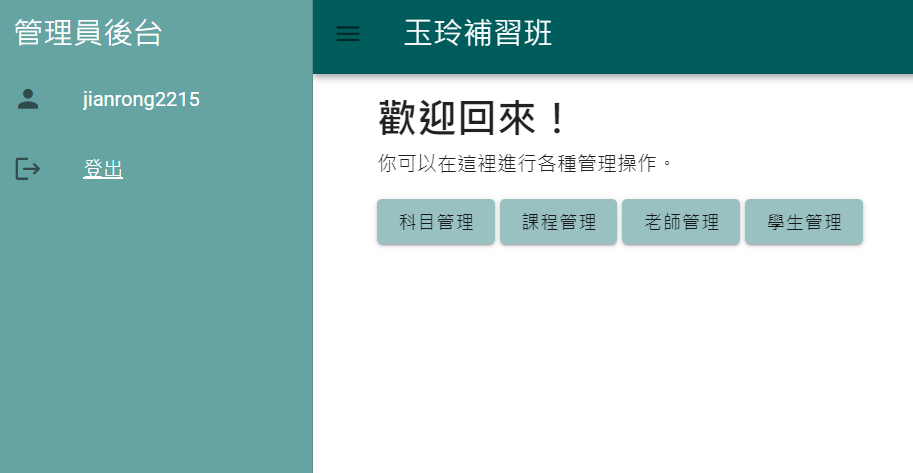
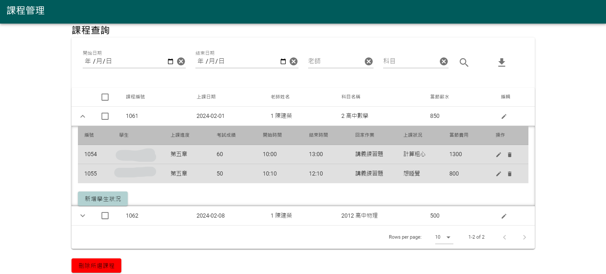
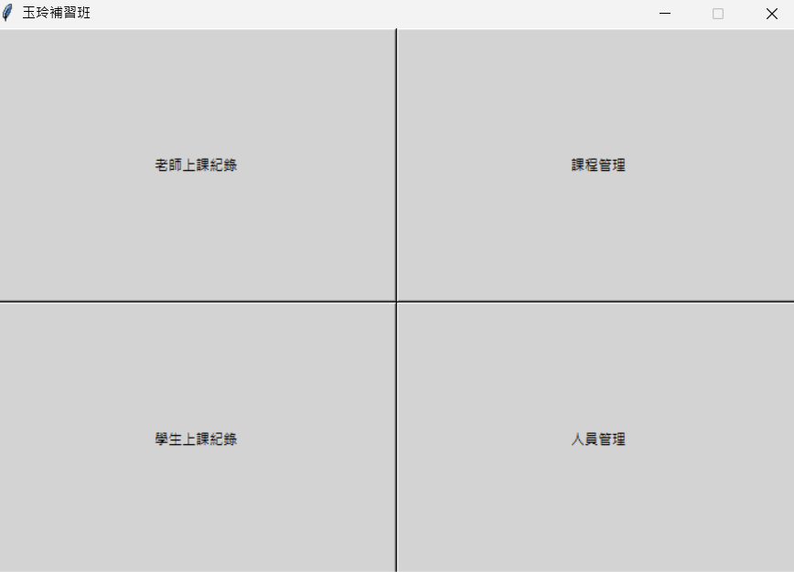
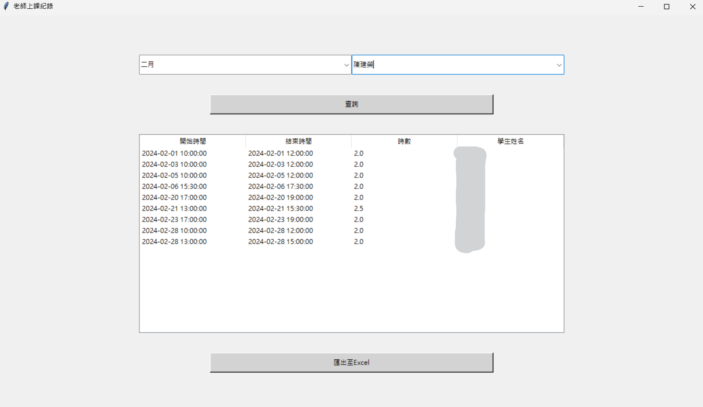

排版還在製作中，敬請見諒...
Tutoring Center System 家教中心紀錄系統
快速跳轉
(新系統使用Render部署，載入可能較慢，請耐心等待，失敗則重新整理即可)
新系統
舊系統
新版
簡介
在學習一陣子的Flask、Vue.js後，系統設計分析課程需要分析任一個系統，於是我決定直接改良家教班的紀錄系統。
這一次我沒有用像Budibase類的現成工具，從前端、後端到容器化部署都實際開操作一遍。
我們家教班特別的地方是有1對1上課及1對多上課，兩種費用計算方式不同，具體要根據基本價、人數及重疊時間計算。
於是這個問題成了最大的難點，後來我靠特別的資料庫結構及前端UI解決這個問題。
用例
1. 使用者根據身分進入對應的頁面
2. 管理員事先設定好所有人的基本學費、薪水
3. 老師創建上課紀錄(日期、科目、老師)，並展開子表格，插入學生狀況，以管理1對多課程。
4. 系統根據重疊時間及上課人數自動計算薪水及學費
5. 老師根據身分查詢自己的課程，無法看到他人的資料
技術框架
使用工具：Flask、Vue.js、Vuetify、MSSQL、Docker
部署平台：Google Cloud Run
圖片及系統連接
登入： (點選下圖跳轉系統)
管理員首頁：

課程查詢(部分)：

舊版
簡介
這是我剛學習SQL時練習做的專案，當時工作的家教班還在用Line群組回報並人工入檔，效率實在太差。
於是我找到免費MSSQL託管，並用Budibase做簡易前端，用Python做管理員後端。
上傳及查詢網頁
使用工具：Budibase、MSSQL
點選下圖跳轉系統
後台視窗應用
使用工具：Python、MSSQL
首頁：

老師上課紀錄：
